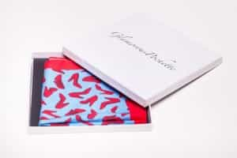

Kamal is a French Blogger, Stylist and Founder of Glamorous Pochette : Perfectly unique & exquisite pocket squares cut from superior Moroccan silk.


If you think about it, the concept of pocket squares is kind of odd: a functionally useless piece of cloth in a functionally useless pocket. But of course, any self-respecting sharp dresser knows that clothes aren’t just about being functional—what’s life without a little style?
You might be surprised to learn, though, that while there have been stylish people around since clothes became a thing, pocket squares came onto the fashion stage relatively late. Handkerchiefs, pocket squares’ rustic ancestor, have been used since ancient times. But surprisingly, in the Western world, carrying a single handkerchief for nose-related issues only became popular during the Renaissance (before that time, they were usually used for wiping sweat from your face, or covering your head).
Among fans of pocket square lore, English King Richard II is typically credited with starting the trend of carrying around a quality piece of fabric to clean your nose—or to block it from your neighbors’ foul body odor.
Today, the legacy lives on, and not just because each one has had a particular pocket square fold named for him: As you likely know if you’re reading this, pocket squares are back in fashion. Look at a contemporary awards show red carpet and you’ll see sharply dressed celebrities like Jon Hamm (whose show “Mad Men” may be partially responsible for the pocket square renaissance), Justin Timberlake, Diddy, and Robert Downey Junior all wearing a ‘square. Will you take your place among them? You should.
Some of us are reckless fashion adventurers, and others are more cautious about our sartorial choices. If you’re debating whether or not to sport a pocket square, here are five good reasons to start doing so immediately:
What do Jay Gatsby, Clark Gable, Don Draper, and Daniel Craig (as well as James Bond) have in common? They’re all sharp dressers – and all of them have worn pocket squares. Still dubious about the elegant touch of that square of folded handkerchief? Think about one of menswear’s darkest incarnations: the leisure suit. It has pockets, but certainly no pocket square!
In bygone days, remarkable men had head-turning accessories, be it the helmet of a Viking warrior, the feather in the romantic troubadour’s cap, or the earring of a wealthy Renaissance-era noble. Unless you have a really unique job, it’s likely you can’t wear any of those things to spice up the daily grind. Luckily, the pocket square is a more subtle and modern way to add personality and elegance to what might otherwise be a suit like any other.
In his famous short poem “In a Station of the Metro,” Ezra Pound observes, “The apparition of these faces in the crowd;/Petals on a wet, black bough.” If everyone were wearing pocket squares, the poem might just have a few more lines. Maybe imagery about flames or colorful birds would be involved. Pocket squares will get you noticed, either for their subtle elegance, or their flamboyant shades and folds. Turn the right head and your life might take a very different turn, as well.
We all have the clothes we “should” wear, and sometimes, no matter how unique we try to be, we still end up blending into the crowd. But why not make a bold statement that will set you apart? Of course, nothing that will get your boss to call security! A pocket square is an excellent way to be bold, while not rocking too many boats. Add a pocket square in any color or combination of colors you can imagine, to give your suit a dash of personality and uniqueness. Pocket squares may be fairly unusual today, but they’re backed with enough historical credentials to command both fascination, and respect.
Some great fashion statements are also great expenses. Not so with pocket squares. Those gentlemen blessed in the wallet department may choose to invest in designer handkerchiefs in fabrics like silk, but even a less well-off fellow can seek out interesting fabrics and patterns in affordable menswear stores. Economical and eminently portable, the pocket square lets you decide, from how to fold it, to whether or not you want to keep it on display, if there’s a moment you feel you’d like a little less attention. A pocket square does not have to be a lifelong commitment: give one a try today and see if it’s for you. We bet you’ll enjoy it—as will everyone who sets eyes on you.

For those of you who already know me, to put it short, I’m a hardcore freak when it comes to Pochettes. Last year, I started a small company, Glamorous Pochette, in Eastern Europe (where else? huh…) and today, is a big day.. it has been already one year and we are doing pretty good. So to celebrate this event, I would like to offer all you guys, dear ROK readers, a nice little gift—a 20% discount.
Our Pocket Squares are made in Italy, 100% pure silk/linen/cotton and, especially, they are hand rolled. So you are getting a top-class product, plus a gorgeous packaging—Your Pochette will come individually packaged in a custom white Glamorous Pochette Boxes. Keep it safe, so it can grace your suits for years to come.
And I advice you to go for the Player Pocket Square. All the ladies will love it… and will try to steal it, I guarantee it. Every time I go out, there will a bitch in the club who will try to steal my Pocket Square. If you guys have any questions, I will be happy to help.
Glamorously yours,
Kamal.
Read Next: Here’s What You Should (And Shouldn’t) Do When Buying A New Suit